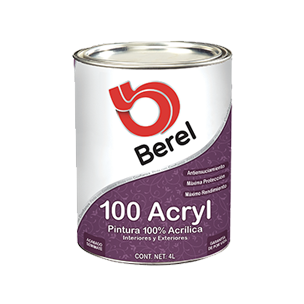
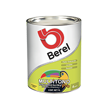
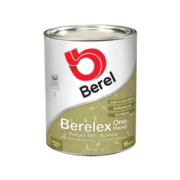

|
100 Acryl
Serie 2100
100 Acryl es una pintura formulada con resinas 100% acrílicas. Tiene una alta resistencia a la alcalinidad del cemento, excelente resistencia al lavado, manchado giseo y decoloración:
1-. Anti-ensuciamiento
2-. Máxima Protección
3-. Para interiores y/o exteriores
4-. Acabado: Semimate
5-. Rendimiento* 10-12m2/L
6-. Presentaciones: 1L, 4L, 19L
|

|
|

|
Multitono Pro
Serie 4700
Es una pintura vinílica acrílica de acabado mate con excelente rendimiento y resistencia tanto al giseo y a la decoloración, además de una muy buena resistencia al lavado con buena brochabilidad, nivelado y cubrimiento.
1-. Excelente desempeño a un bajo costo
2-. Calidad 4 años
3-. Para interiores y/o exteriores
5-. Acabado: Mate
6-. Rendimiento (a 2 manos)*: 6-7 m2/L
7-. Presentaciones: 1L, 4L, 19L
|
|
Berelex One Hand
Serie 3200
Berelex One Hand es nuestra pintura que cubre a una sola mano y además ¡está lista para aplicar! Berelex One Hand nuestra pintura ecológica de bajo olor, fácil de limpiar, encuéntrala en colores pasteles. Está formulada con resina 100% acrílica, se distingue por su alto poder cubriente, lo cual permite lograr una fácil cobertura en una sola mano, ahorra tiempo de aplicación y producto. Una de sus características es la de inhibir el crecimiento de bacterias, hongos y algas.
Cubre en una mano
Lista para aplicar
Para interiores y/o exteriores
Acabado: Mate
Rendimiento (a 1 mano)*: 14-16 m2/L
Presentaciones: 1L, 4L, 19L
|

|